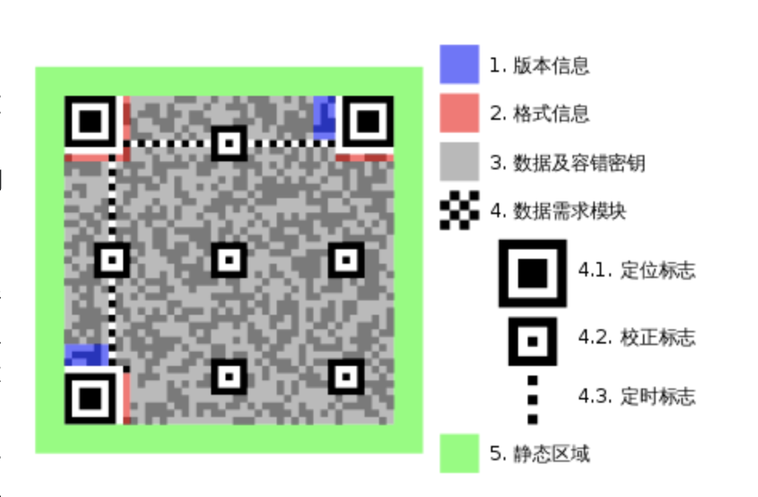

神奇的二维码
今天，买早餐的时候，习惯性的打开手机 扫一扫，看着白底黑格子的小图片，我 好奇了
二维码，背后是怎么工作的呢？
你 不好奇吗？
二维码，学名 QR code，全称 Quick Response code（快读响应矩阵码），1994年由日本 DENSO WAVE 公司发明，首次应用于日本的汽车工厂。发明者呢 就希望QR码 可以被机器快速识别，迅速响应。
先来看下二维码的前身，一维条形码。
一维条形码实在是太常见了，超市商品包装上 几乎都有一个 这样的标识。多条黑白长方形，不规律的一字摆开。
这里我们以 UPC 码（universal product code， 通用产品代码）为例，说一说里面的奥秘。
本质上 就是 30 条粗细不一的黑线，黑色竖线与白色间隔的宽度，就是隐藏在条形码里的二进制信息。
黑色竖线共有四种不同宽度，最细的一条 代表一个1，二倍宽的竖线代表11，同理，四倍宽的竖线代表1111。
条形码左右两边的 黑白黑这组竖线，会告诉扫描器最细宽度这个二维码中的最细宽度是多少，也就是规定了 1 的宽度，从而，不论条形码如何印刷，变得多胖多瘦，都可以被识别。且少数地方 或 多数地方被污损，只要可以保留横着的一条线，机器就可以识别出其中的信息。
第二个 强大的地方在于，条形码左侧所有组合里 1 的个数都是奇数，右侧中都是偶数。如果 扫码器从左往右扫描时，发现一组数据中1的位数为奇数，那么很显然，扫反了，然后用密码表解读数字，再重新组合，就可以得到条形码所代表的含义。
最后 编号的第 12 位数，是根据前11 位数计算出来的 校验码，类似于 文件传输时候附带的 checksum，保证中途没有数据被串改。
以上三个特性 保证了条形码 可以适应各种复杂的现实情况，非常可靠。
但是，条形码 可以承载的信息还是太少了，所以 二维码 诞生了！
在各种奇奇怪怪的二维码中，QR code 脱颖而出。
最为明显的标识 就是规规矩矩的四方格子中，左上角 左下角及右上角的三个回字形方块（其实我们都没注意到，在大多数QR 码的右下角 也有一个比较小的 不太显眼的回字形方块），那么 这种排布方案，可以让用户或机器无论从哪个方向或角度扫描二维码，都会自动校正为正确的方向。
下面我们就要具体来聊聊他的原理了。看过维基百科的我 下巴都快惊掉了，为啥可以发明这么聪明的东西。

现世的普通QR code 有四十个版本，版本越大，对应图形的尺寸越大，最小的版本1，是一个 21 x 21 的正方形，每升级一个版本，对应正方形的长款 各增加四个小格子长度，那么最大的版本 40， 是一个 177 x 177 的巨型正方形。
我们以上面的二维码为例，介绍一下 QR 码的基本组成。
第一部分是，三个角的回字形方块 和 周围宽度为 1 的白色分隔符； 第二部分是，三个回字形方块间的黑白黑白方块的定位图案，以告知扫码器横竖的标准方向。 第三部分是，4.2 表示的 5 x 5 校正图形小方块，尺寸越大 用于矫正的方块数量也越多， 这样 即使我们用奇怪的角度扫描，算法（RGB转化为灰度图像 - 局部阈值发二值化图像 - 形态学滤波 - Harris 角点检测 - 凸包算法 - 提取QR 码的轮廓 - 计算QR码定点角点坐标 = 计算QR码顶点角点坐标 - 透视变换校正）依然可以根据这三组图案，获取正面的 正确的图案 第四部分是，有两组相同的方块（图中 2 格式信息），组成格式信息 每组15个，放置在定位区域的旁边； 第五部分是剩下的区域，会被分成几个模块，存储数据 和 纠错码。 第六部分，在版本大于 7的QR码中，如图就是，还需要在图中两处紫色的位置 记录 18位的版本信息，提高扫码器的效率。
第 1 2 3 部分的设置 只是让QR码可以被扫码器认出来。但 QR码 真正超级无敌厉害的地方是，即使污损处高达百分之三十，QR码中存储的信息仍可以被正确的识别。
我们再继续看看，为什么。
继续往下看 我们就进入到了二维码的核心内容，Reed-Solomon （里德-所罗门码）编码： 一种前向错误更正的信道编码，对由校正过采样数据所产生的有效多项式。
二维码中的黑白格子 实际上就是由 1 0 两种数字对应的二进制数据，比如 1 2 3 4 这四个数字，我们可以将其编码为 0001 0010 0011 0100，1 对应小黑格子，0 对应小白格子，而里德所罗门编码可以随机污损其中的几个小格子，机器仍然可以自动还原成正确的数据。怎么实现的呢？
继续看。下面将会提到几个超级厉害的概念：伽罗瓦域，多项式
为了简化这一过程，我们简化成四个格子，分别对应四个数字： 1 2 3 4，每个数字我们按照顺序，给一个位置信息，比如：1 对应位置3，2 对应位置2，3 对应位置1，4 对应位置0，简单来说 我们可以理解为二进制的幂指数，不太准确 但比较相似。
下面我们任意修改其中两个数字，算法都可以自动发现并修正成正确的数字。为了做到这件事，需要用到 4 个变量，两个错误数字的位置 e1 和 e2，这两个格子与原正确数字的差值，即错误的大小 y1 和 y2，如果这四个变量已知，那么机器就可以自动修正数字。
但上述陈述的前提，是要让机器知道，这串数字错了。
最简答的方法就是算0，如果结果是0，就没问题，反之不是0就是有问题的。比如我们每个设备有一个固定值 g，输入值 m，如果 m - g = 0，这个结果就是对的。但 固定值 g 是不会变的，当输入值 m 变化，m - g 结果就不等于0了，所以我们需要根据 m 和 g 反推出一个 p，无论输入怎么变化，p 值都会保证 m + p - g 的结果为0，这个 p 就是纠错码。
当输入值 m 被篡改了，那么上述的 m + p - g 表达式就不再为0，机器就知道这串数字错误了，但有一个问题，输入值 m 和 纠错码 p 都会出现在二维码上，那这就带来了一个新问题，纠错码同样有被修改的可能，也就是说，如果 m + p - g 不等于0，我们永远都不知道是 m 错了 还是 p 错了，那怎么办呢？
思路是将 m 与 p 合并成一个值，比如 m 是 1234，p 为 xxxx，那么合并后为 1234xxxx，然后会发现 mp - g 很难结果为0，相差太大了，怎么办呢？
答案是 除法。只要 mp 可以整除 g，可以判断输入数字没问题。但是 这样做仍然会遇到一些问题，首先mp 与 g的整除关系可以是多个，比如 9 可以整除3 ，27 也可以整除 3，其次，如果不能整除，那么我们怎样通过一个余数 计算出哪个数字错了呢？
发现这条路可能走不通了，换个思路，引入一个新的概念：伽罗瓦域（Galois Field， GF）
在数学中，有限域（英語：finite field）或伽罗瓦域（英語：Galois field，为纪念埃瓦里斯特·伽罗瓦命名）是包含有限个元素的域。与其他域一样，有限域是进行加减乘除运算都有定义并且满足特定规则的集合。有限域最常见的例子是当 p 为素数时，整数对 p 取模。 有限域的元素个数称为它的阶。 有限域在许多数学和计算机科学领域的基础，包括数论、代数几何、伽羅瓦理論、有限幾何學、密码学和编码理论。详见维基百科
我们可以简单理解，伽罗瓦域厉害的地方在于，这是一个有限的世界，域内的数无论如何计算都不会得到他们之外的结果。
以 GF[2^3]域为例，一共有 8 个数，及对应的二进制
1
2 0， 1， 2， 3， 4， 5， 6， 7
000， 001， 010， 011， 100， 101， 110， 111
伽罗瓦域里 加法与减法运算是一样的，都是异或算法，比如 1 + 2 或 1 - 2
1
2
3
4001 异或操作
010
---
011 结果都是3
除法与乘法或相对复杂些，比如我们想计算 6 x 7，
1
2
3
4
5
6
7
81.模二乘法 110 3. 模二除法 除以一个固定的数 1011
111 10
------- -----
110 1011/10010
110 1011
2.异或运算 110 ------------
---------- 余数： 100 也就是 4
10010
由上 我们得知 利用伽罗瓦域的特性，有限个数之间 无论我们如何计算 永远得到这有限个数之内的数值，神奇啊！！
好 回到上面 我们刚刚说的那个除法问题。我们如何用这仅有的几个数字表达 mp 这么大的一个数字呢？ 哈哈哈哈哈，没错 多项式
是由称为未知数的变量和称为系数的常数通过有限次加减法、乘法以及自然数幂次的乘方运算得到的代数表达式 wikipedia
比如 最开始的四个数 1 2 3 4，对应的位置信息分别是 3 2 1 0，那么用多项式可以这样表达，我们将小格子中的数 作为多项式的系数，位置信息作为多项式的指数， 表达式可以写成 m(x) = 1*x^3 + 2*x^2 + 3*x^1 + 4*x^0
那么 上面的 输入值 mp 12340000 的多项式我们可以写成
m(x) = 1*x^7 + 2*x^6 + 3*x^5 + 4*x^4 + 0*x^3 + 0*x^2 + 0*x^1 + 0*x^0
固定值 g 也可以写成多项式，根据纠错码 p 来写
g(x) = (x - 2^0)(x - 2^1)(x - 2^2)(x - 2^3)，这样写的目的在于 这个多项式展开后，最高的幂次是4
然后 我们用 m(x) / g(x) = h(x) ....p(x)，这里省略下计算方法（有点长），得到的p(x) = 1*x^3 + 6*x^2 + 7*x^1 + 4*x^0，这个多项式的系数1674 就是我们想要的纠错码，也就是 mp = 12341674，有了这个纠错码，我们 变化一下上面的 方程组m(x) / g(x) = h(x) ....p(x)， m(x) + p(x) = h(x)g(x) => M(x) = h(x)g(x)
好 到这里 我们的准备工作已经完成，接下来 我们任意修改 mp 中的两个数字，然后 模拟系统的计算方法，接着看，会发生什么。
比如 我们将 mp = 12341674 修改成 mpw = 62241674。也就是 第一项的 1 变成了 6，第三项的 3 变成了 2,接着我们将修改后的mpw 变成多项式
mw(x) = 6*x^7 + 2*x^6 + 2*x^5 + 4*x^4 + 1*x^3 + 6*x^2 + 7*x^1 + 4*x^0
除以提前 设定好的 g(x)，将会得到余数 1 6 4 5，有余数说明输入数据有误，那么如何找到错误数字的位置和偏差呢？回到M(x) = h(x)g(x)这个方程，如果想要余数为0，那么看 g(x) = (x - 2^0)(x - 2^1)(x - 2^2)(x - 2^3) 恰好有四种情况会等于0，x = 1,x = 2, x = 4, x = 8，将这几个值分别带入公式：
1
m(x) = 6*x^7 + 2*x^6 + 2*x^5 + 4*x^4 + 0*x^3 + 0*x^2 + 0*x^1 + 0*x^0
可以得到四个结果
1
2
3
4m(1) = 6
m(2) = 0
m(4) = 4
m(8) = 5
这四个结果，与两个错误数字的位置 e1 和 e2，错误的大小 y1 和 y2，又可以根据 m(x) = y1*x^e1 + y2*x^e2 组成方程组，四个未知数 四个方程组，不难得到 y1 = 1,y2 = 7, e1 = 5, e2 = 7，将错误的 mpw = 62241674，中 6 和 2 拿出来 与 7 和 1 做异或操作，即可得到原来正确的数值 12341674。
以上的这些操作我们做了非常多的简化，实际场景中 会比这个复杂的多。
回顾下，我们将信息编码成二进制，按顺序填上原始数据，再继续填上纠错码 和 其他信息，再和 掩码做一次抑或运算，一张二维码就诞生了，一个非常可靠且承载信息量很大的码。
太不容易了，下篇博客像试着写个二维码的东西